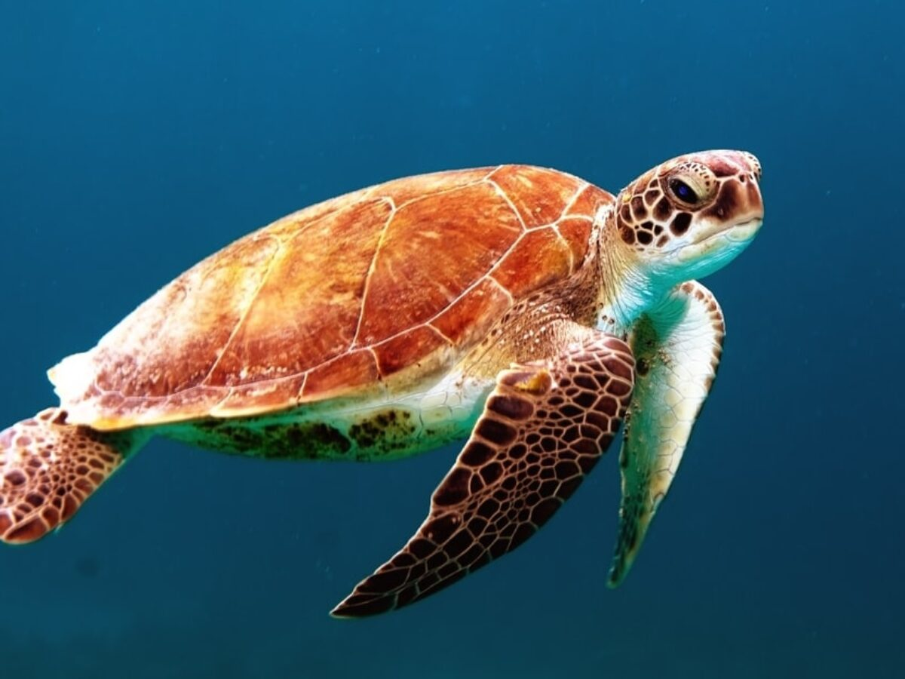
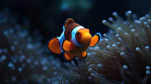

Penyu adalah binatang reptilian bercangkang Cangkang atau tempurung berfungsi sebagai alat pertahanan diri atau pelindung.
Ikan badut adalah jenis ikan laut kecil yang termasuk dalam subfamili Amphiprioninae dalam famili Pomacentridae